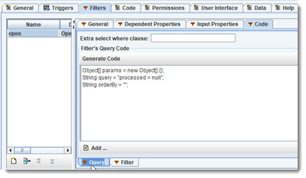
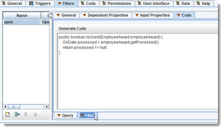
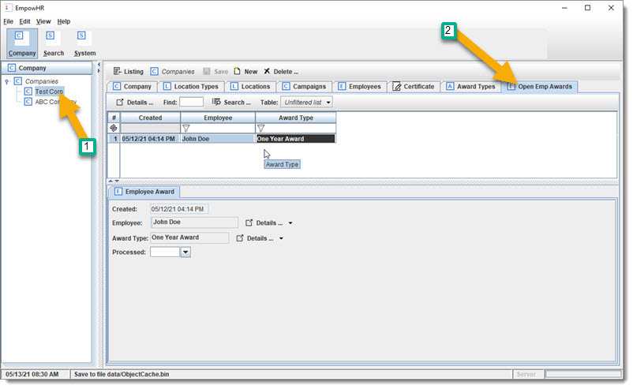

Ok, I need to come up with a new requirement that will need a "Link Merger". A Link Merger is used to create a collection from a property path.
For this example,
we want to have a "list of open Awards from Employees who are inactive".
To do this, we will create a filter on Employee, add processed date on EmployeeAward to know that it is no longer "open", and create a filter on EmployeeAward.
Click on EmployeeAward and add property "processed" with type "date". This will be used to know if the Employee's Award is still open or not.
Click on Employee, go to the Object Editor "Filter" tab, and create a new filter and name it "inactive".
For "dependent properties", we only need "inactiveDate",
and for code:
Set the code to match the next two screen shots:

Click on EmployeeAward, go to the Object Editor "Filter" tab, and create a new filter and name it "open".
For "dependent properties", we only need "processed",
and for the code, use the following:


Now, right click on Company and select "Create new Merger Link ...", which will bring up property path chooser. For the propet path, choose:

"employees:inactive.employeeAwards:open" which means "for a Company, get the
EmployeeAwards that are not processed for Employees with an inactiveDate"
It named the link "mergeEmployeeAwards", go ahead and change it to
"mergeOpenEmployeeAwards". And change display to "Open Emp Awards".
 Regen and rerun, and let us see how this worked out.
Regen and rerun, and let us see how this worked out.
Go to the "Test Corp" Company and click on the "Open Emp Awards" tab. The list is empty. Now go to Employee "John Doe", and give him an inactive date, and a reason if you want.
Now go back to "Open Emp Awards" tab.

So ... that is a Merger Link that uses a Property Path from one Object to another Object and allows including Filters. The other thing to notice is that it is real-time: a change that affects the property path will automatically keep the list updated - not by refreshing, but by adjusting based on changes. Running the server and multiple clients would show this.
 Discuss & Learn: pull up Company.java and go-to method
"getMergeOpenEmployeeAwards()".
Discuss & Learn: pull up Company.java and go-to method
"getMergeOpenEmployeeAwards()".

The method is a small amount of code, that returns a list (collection) of EmployeeAwards. The annotation tells it the Property Path for the Merger. That is all that is needed to make this work.
Internally, it uses a HubMerger, which will use the Property Path to configure a tree structure that "knows" how to keep the list updated, by listening for specific changes that affect the list. The things that it "listens" for are found by parsing the property path and getting any additional "dependent property paths" (including filters). The HubMerger's tree structure is then able to be notified, which allows it to know how to update the list.
The combination of Property Paths (PP), dependent PPs, and being able to listen is core to how reactive models work, and is used in Software Patterns like Model/View/Control (MVC).
Historically, there has been a problem scaling this to work with large amounts of data. The cost of listening is too high at a certain point. OA has been able to scale this by using a combination of listening with some other unique techniques. The cost is reduced to a small size and stays small with large amounts of data (objects). Another solution is "reactive streams", but there are boundaries and challenges when using them as the only solution.
 Review:
the solution ends up being a combination of observability through listeners, bubble-up events, event streams, and tree structures like what Merger uses.
Add remoting to the mix, and you have distributed synchronized object graphs. Sounds complicated, but the code is small and is built on a few core building blocks:
Observable Object, Observable Collection, Collections that can be shared, Reflection, annotations, Object Serialization (all types, tech independent), Remoting,
Communication, Persistence.
Review:
the solution ends up being a combination of observability through listeners, bubble-up events, event streams, and tree structures like what Merger uses.
Add remoting to the mix, and you have distributed synchronized object graphs. Sounds complicated, but the code is small and is built on a few core building blocks:
Observable Object, Observable Collection, Collections that can be shared, Reflection, annotations, Object Serialization (all types, tech independent), Remoting,
Communication, Persistence.